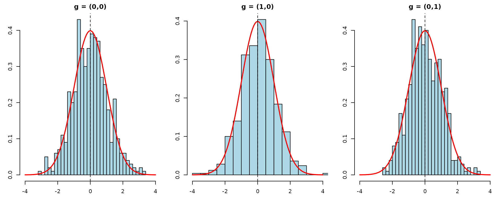

Overview
This vignette mirrors the Python Interference.ipynb test
notebook, demonstrating the clustered interference estimators in
CausalModel. The framework follows Qu et al. (2021), estimating direct
treatment effects and spillover effects under network interference.
Single Trial
We generate clustered data with group structure , direct effect , and spillover parameters . The true treatment effect at neighborhood configuration is:
tau <- 1
gamma <- c(0.5, 0.1)
group_struct <- c(2, 3)
cdata <- generate_fixed_cluster(
clusters = 2000, group_struct = group_struct,
tau = tau, gamma = gamma
)
cl_obj <- clustered(
Y = cdata$Y, Z = cdata$Z, X = cdata$X,
cluster_labels = cdata$cluster_labels,
group_labels = cdata$group_labels,
ingroup_labels = cdata$ingroup_labels,
n_matches = 50
)
result_aipw <- est_via_aipw(cl_obj)
result_ipw <- est_via_ipw(cl_obj)Estimated Treatment Effects
# True beta(g) for each encoded G
grid <- as.matrix(expand.grid(lapply(group_struct, function(gs) 0:gs)))
true_beta <- tau + as.numeric(grid %*% gamma)
for (j in seq_along(result_aipw)) {
cat(sprintf("\n### Group %d\n", j - 1))
beta_g <- result_aipw[[j]]$beta_g
se <- result_aipw[[j]]$se
valid <- !is.nan(beta_g) & se > 0
if (any(valid)) {
idx <- which(valid)
z_stats <- (beta_g[idx] - true_beta[idx]) / se[idx]
df <- data.frame(
g_index = idx - 1,
True = round(true_beta[idx], 3),
AIPW = round(beta_g[idx], 3),
SE = round(se[idx], 3),
z = round(z_stats, 3)
)
print(knitr::kable(df, row.names = FALSE))
cat("\n")
}
}
#>
#> ### Group 0
#>
#>
#> | g_index| True| AIPW| SE| z|
#> |-------:|----:|-----:|-----:|------:|
#> | 0| 1.0| 1.125| 0.131| 0.955|
#> | 1| 1.5| 1.492| 0.126| -0.061|
#> | 3| 1.1| 1.077| 0.077| -0.305|
#> | 4| 1.6| 1.586| 0.071| -0.198|
#> | 6| 1.2| 0.970| 0.074| -3.101|
#> | 7| 1.7| 1.762| 0.076| 0.824|
#> | 9| 1.3| 1.327| 0.122| 0.222|
#> | 10| 1.8| 1.850| 0.126| 0.397|
#>
#>
#> ### Group 1
#>
#>
#> | g_index| True| AIPW| SE| z|
#> |-------:|----:|-----:|-----:|------:|
#> | 0| 1.0| 0.972| 0.111| -0.256|
#> | 1| 1.5| 1.588| 0.078| 1.133|
#> | 2| 2.0| 1.917| 0.098| -0.854|
#> | 3| 1.1| 1.133| 0.078| 0.419|
#> | 4| 1.6| 1.560| 0.052| -0.763|
#> | 5| 2.1| 2.146| 0.079| 0.581|
#> | 6| 1.2| 1.071| 0.101| -1.273|
#> | 7| 1.7| 1.711| 0.076| 0.142|
#> | 8| 2.2| 2.247| 0.092| 0.516|Monte Carlo Simulation
We run 500 replications tracking both AIPW and IPW to simultaneously validate normality and compare coverage. We focus on group 0 (the first group) and track three neighborhood configurations:
- : no treated neighbors in either group
- : one treated neighbor in group 0
- : one treated neighbor in group 1
n_reps <- 500
n_clusters <- 500
g_indices <- list(c(0, 0), c(1, 0), c(0, 1))
g_encoded <- sapply(g_indices, function(g) {
g[1] + g[2] * (group_struct[1] + 1) + 1 # 1-indexed
})
true_values <- sapply(g_indices, function(g) tau + sum(g * gamma))
sim_results <- array(NA, dim = c(n_reps, length(g_indices), 4),
dimnames = list(NULL, NULL,
c("beta_aipw", "se_aipw",
"beta_ipw", "se_ipw")))
for (i in seq_len(n_reps)) {
cdata <- generate_fixed_cluster(
clusters = n_clusters, group_struct = group_struct,
tau = tau, gamma = gamma
)
cl_obj <- clustered(
Y = cdata$Y, Z = cdata$Z, X = cdata$X,
cluster_labels = cdata$cluster_labels,
group_labels = cdata$group_labels,
ingroup_labels = cdata$ingroup_labels,
n_matches = 50
)
res_aipw <- est_via_aipw(cl_obj)
res_ipw <- est_via_ipw(cl_obj)
for (j in seq_along(g_indices)) {
idx <- g_encoded[j]
sim_results[i, j, "beta_aipw"] <- res_aipw[[1]]$beta_g[idx]
sim_results[i, j, "se_aipw"] <- res_aipw[[1]]$se[idx]
sim_results[i, j, "beta_ipw"] <- res_ipw[[1]]$beta_g[idx]
sim_results[i, j, "se_ipw"] <- res_ipw[[1]]$se[idx]
}
}Normality of AIPW
Summary Table
sim_rows <- list()
for (j in seq_along(g_indices)) {
betas <- sim_results[, j, "beta_aipw"]
ses <- sim_results[, j, "se_aipw"]
valid <- !is.nan(betas) & !is.nan(ses) & ses > 0
betas <- betas[valid]
ses <- ses[valid]
tv <- true_values[j]
ci_lo <- betas - 1.96 * ses
ci_hi <- betas + 1.96 * ses
sim_rows[[j]] <- data.frame(
g = paste0("(", paste(g_indices[[j]], collapse = ","), ")"),
True_beta = tv,
Mean_est = mean(betas),
Bias = mean(betas) - tv,
Emp_SE = sd(betas),
Mean_SE = mean(ses),
Coverage = mean(ci_lo <= tv & tv <= ci_hi),
N_valid = length(betas)
)
}
tbl <- do.call(rbind, sim_rows)
knitr::kable(tbl, digits = 3, row.names = FALSE,
caption = sprintf("Clustered AIPW (%d clusters, %d reps)",
n_clusters, n_reps))| g | True_beta | Mean_est | Bias | Emp_SE | Mean_SE | Coverage | N_valid |
|---|---|---|---|---|---|---|---|
| (0,0) | 1.0 | 1.001 | 0.001 | 0.292 | 0.271 | 0.928 | 500 |
| (1,0) | 1.5 | 1.514 | 0.014 | 0.276 | 0.264 | 0.942 | 500 |
| (0,1) | 1.1 | 1.104 | 0.004 | 0.149 | 0.150 | 0.948 | 500 |
All three values show near-zero bias and approximately 95% coverage, confirming that the AIPW estimator is consistent and well-calibrated.
Studentized Statistics
par(mfrow = c(1, length(g_indices)), mar = c(3, 3, 2, 1))
for (j in seq_along(g_indices)) {
betas <- sim_results[, j, "beta_aipw"]
ses <- sim_results[, j, "se_aipw"]
valid <- !is.nan(betas) & !is.nan(ses) & ses > 0
t_stats <- (betas[valid] - true_values[j]) / ses[valid]
g_label <- paste0("(", paste(g_indices[[j]], collapse = ","), ")")
hist(t_stats, breaks = 25, freq = FALSE, col = "lightblue",
main = sprintf("g = %s", g_label),
xlab = "t", xlim = c(-4, 4))
curve(dnorm(x), add = TRUE, col = "red", lwd = 2)
abline(v = 0, lty = 2)
}
AIPW vs IPW Coverage Comparison
The AIPW estimator is doubly robust: consistent if either the outcome model or the propensity model is correctly specified. This typically yields better coverage than IPW alone.
Per- Coverage Rates
cov_rows <- list()
for (j in seq_along(g_indices)) {
tv <- true_values[j]
g_label <- paste0("(", paste(g_indices[[j]], collapse = ","), ")")
for (method in c("aipw", "ipw")) {
betas <- sim_results[, j, paste0("beta_", method)]
ses <- sim_results[, j, paste0("se_", method)]
valid <- !is.nan(betas) & !is.nan(ses) & ses > 0
betas_v <- betas[valid]
ses_v <- ses[valid]
ci_lo <- betas_v - 1.96 * ses_v
ci_hi <- betas_v + 1.96 * ses_v
cov_rows[[length(cov_rows) + 1]] <- data.frame(
g = g_label,
Method = toupper(method),
Bias = mean(betas_v) - tv,
Emp_SE = sd(betas_v),
Mean_SE = mean(ses_v),
Coverage = mean(ci_lo <= tv & tv <= ci_hi),
N_valid = length(betas_v)
)
}
}
cov_tbl <- do.call(rbind, cov_rows)
knitr::kable(cov_tbl, digits = 3, row.names = FALSE,
caption = "AIPW vs IPW coverage comparison")| g | Method | Bias | Emp_SE | Mean_SE | Coverage | N_valid |
|---|---|---|---|---|---|---|
| (0,0) | AIPW | 0.001 | 0.292 | 0.271 | 0.928 | 500 |
| (0,0) | IPW | -0.001 | 0.278 | 0.271 | 0.944 | 500 |
| (1,0) | AIPW | 0.014 | 0.276 | 0.264 | 0.942 | 500 |
| (1,0) | IPW | 0.006 | 0.274 | 0.264 | 0.934 | 500 |
| (0,1) | AIPW | 0.004 | 0.149 | 0.150 | 0.948 | 500 |
| (0,1) | IPW | 0.006 | 0.151 | 0.150 | 0.950 | 500 |
Overall Coverage
for (method in c("aipw", "ipw")) {
covers <- c()
for (j in seq_along(g_indices)) {
tv <- true_values[j]
betas <- sim_results[, j, paste0("beta_", method)]
ses <- sim_results[, j, paste0("se_", method)]
valid <- !is.nan(betas) & !is.nan(ses) & ses > 0
ci_lo <- betas[valid] - 1.96 * ses[valid]
ci_hi <- betas[valid] + 1.96 * ses[valid]
covers <- c(covers, ci_lo <= tv & tv <= ci_hi)
}
cat(sprintf("Overall coverage for %s: %.3f\n", toupper(method), mean(covers)))
}
#> Overall coverage for AIPW: 0.939
#> Overall coverage for IPW: 0.943Summary
The simulations confirm:
- Clustered AIPW correctly estimates direct and spillover effects under the interference framework, with near-zero bias across all neighborhood configurations.
- Studentized statistics are approximately , validating the asymptotic variance estimation.
- Coverage rates are approximately 93–95% for both AIPW and IPW, consistent with Qu et al. (2021). Under correct specification, the two estimators perform similarly; AIPW’s doubly-robust advantage emerges under model misspecification.